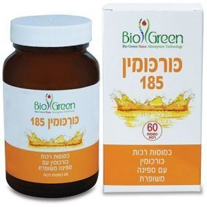

כורכומין 185
60 כמוסות רכות
מעבר לליפוזום הרגיל: הכירו את הדור השלישי של עולם הכורכום.
שדרוג המבנה הליפוזומלי לטכנולוגיית המיקרו־מיצלה של NovaSOL®, לספיגה עוצמתית עד פי 185 ולזמינות ביולוגית רציפה למשך 24 שעות.

הדור השלישי של עולם הכורכום: הכירו את מהפכת המיקרו־מיצלה
כדי להשיג תוצאות אמיתיות, לא מספיק לצרוך כורכום – צריך לוודא שהוא באמת נספג.
כורכומין 185 מבוסס על טכנולוגיית המיקרו־מיצלה של NovaSOL®, המיועדת לשיפור הספיגה והזמינות הביולוגית של הכורכומין.
האבולוציה של הספיגה
-
1
הדור הישן – אבקה
כורכומין בפורמט אבקתי, בעל מסיסות נמוכה במים.
-
2
הדור השני – ליפוזומלי
טכנולוגיה שנועדה לשפר את אופן המסירה והספיגה של הרכיב הפעיל.
-
3
הדור החדש – מיקרו־מיצלה
טכנולוגיית המיקרו־מיצלה של NovaSOL® מבוססת על מבנה מיצלי זעיר, שנועד לשפר את המסיסות והזמינות הביולוגית של הכורכומין.
כורכומין 185 לשימוש אישי ולמסגרות מקצועיות
כורכומין 185 מתאים למי שמחפש כורכומין בספיגה גבוהה, בפורמולה המבוססת על טכנולוגיית המיקרו־מיצלה של NovaSOL® ובפורמט של כמוסות רכות.
מתאים ל:
- בתי טבע וחנויות בריאות
- קליניקות ומטפלים
- רשתות פארם
- עסקים בתחום תוספי התזונה ומוצרי הבריאות
- הזמנות תוספי תזונה בכמות מסחרית
יתרונות מרכזיים
ספיגה עוצמתית עד פי 185
הפורמולה מבוססת על טכנולוגיית המיקרו־מיצלה של NovaSOL®, שנועדה לשפר את המסיסות והזמינות הביולוגית של הכורכומין.
טכנולוגיית מיקרו־מיצלה מתקדמת
טכנולוגיית המיקרו־מיצלה של NovaSOL® מהווה את הבסיס לפורמולה ולשיפור הזמינות הביולוגית של הכורכומין.
זמינות ביולוגית למשך עד 24 שעות
הטכנולוגיה מאפשרת נוכחות ממושכת של הרכיב הפעיל.
מסיסות במים
הפורמולה מבוססת על מבנה מיצלי שנועד לשפר את המסיסות של הכורכומין.
כמוסות רכות
כורכומין 185 מגיע בפורמט של כמוסות רכות.
ללא פיפרין
הפורמולה אינה מכילה פיפרין, כלומר תמצית פלפל שחור.
ריכוז גבוה של כורכומינואידים
הפורמולה מכילה כורכומינואידים בריכוז גבוה ובזמינות ביולוגית גבוהה.
שחרור במעי
המבנה המיצלי נועד לאפשר שחרור של הרכיב הפעיל במעי.
עמידות לחומציות הקיבה
המבנה המיצלי מספק עמידות גבוהה לחומציות הקיבה.
ריכוז מקסימלי בדם תוך שעה
טכנולוגיית המיקרו־מיצלה של NovaSOL® מאפשרת הגעה מהירה של הרכיב הפעיל למחזור הדם.
פיתוח טכנולוגי ומחקרי
טכנולוגיית NovaSOL® פותחה במסגרת מחקר ופיתוח מדעי וזכתה להכרה בתחום החדשנות.
מינון מומלץ
1–2 כמוסות ביום, עם הארוחה.
יש לאחסן במקום קריר, מוצל ויבש.
לפני השימוש
במקרה של מצב רפואי, נטילת תרופות או טיפול רפואי קבוע, מומלץ להתייעץ עם איש מקצוע רפואי לפני השימוש. במיוחד יש להיוועץ לפני השימוש במקרים של:
- אבני מרה
- חסימות או היצרויות בדרכי המרה
- מחלות כבד
- נטילת תרופות נוגדות קרישה, כגון קומדין או קלקסן
- טיפול כימותרפי או ביולוגי
- סוכרת
- מצבים רפואיים נוספים הדורשים טיפול תרופתי קבוע
רכיבים ומידע
תכולת המוצר: 60 כמוסות רכות
כל כמוסה מכילה:
- 40 מ״ג כורכומין פעיל
- 750 מ״ג תמצית נוזלית פטנטית
- NovaSOL® – תמצית כורכומין במבנה מיצלי
- כורכומינואידים בריכוז ובזמינות ביולוגית גבוהה
ללא פיפרין
הפורמולה אינה מכילה פיפרין או תמצית פלפל שחור.
אלרגן
מכיל ג'לטין דגים.
כשרות ואישורים
כשר פרווה
כורכומין 185 של ביוגרין כשר פרווה, בהשגחת הרב צפניה דרורי שליט"א, רב העיר קריית שמונה.
אישורים
מאושר על ידי משרד הבריאות.
תווית המוצר
שאלות נפוצות
כורכומין 185 מבוסס על טכנולוגיית המיקרו־מיצלה של NovaSOL®, שנועדה לשפר את המסיסות והזמינות הביולוגית של הכורכומין.
רמת הספיגה תלויה בין היתר בצורה שבה הכורכומין משולב בפורמולה. כורכומין 185 עושה שימוש בטכנולוגיית המיקרו־מיצלה של NovaSOL®, המיועדת לשיפור המסיסות והזמינות הביולוגית של הכורכומין.
NovaSOL® היא טכנולוגיית המיקרו־מיצלה שעליה מבוססת הפורמולה של כורכומין 185. הטכנולוגיה מבוססת על מבנה מיצלי שנועד לשפר את המסיסות והזמינות הביולוגית של הכורכומין.
לא. כורכומין 185 אינו מכיל פיפרין או תמצית פלפל שחור.
טכנולוגיית NovaSOL® מאפשרת זמינות ממושכת של הרכיב הפעיל, עד 24 שעות.
המינון המומלץ הוא 1–2 כמוסות ביום, עם הארוחה, בהתאם להוראות השימוש של המוצר.
כן. כורכומין 185 של ביוגרין הוא כשר פרווה, בהשגחת הרב צפניה דרורי שליט"א, רב העיר קריית שמונה.
רוצים לקבל הצעת מחיר לכורכומין 185?
השאירו פרטים ונחזור אליכם עם מידע נוסף והצעת מחיר.